Custom Column:
Create additional fields to capture specific user information as needed. These custom columns will be visible and available while adding or managing users.
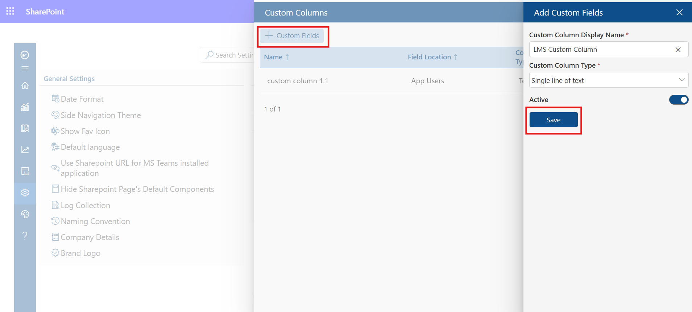
Gamification — Configuration & User Guide
1. Overview
The Gamification feature in LMS 365 is designed to boost learner engagement and motivation by rewarding users for their learning activities. It introduces a points-based reward system, achievement badges, and redeemable prizes — all visible through a dedicated Gamification Dashboard with leaderboards and analytics.
This document covers how to enable and configure Gamification in LMS 365, explains each component in detail, and provides a walkthrough of the Gamification Dashboard.
Gamification in LMS 365 consists of three core components:
- Reward Points — Points awarded to learners for completing learning activities.
- Badges — Digital achievements unlocked when learners meet specific milestones.
- Prizes — Redeemable rewards that learners can claim using their earned points.
2. Enabling Gamification
Gamification is accessed and enabled from the LMS 365 Settings panel. Only Admin users can enable and configure this feature.
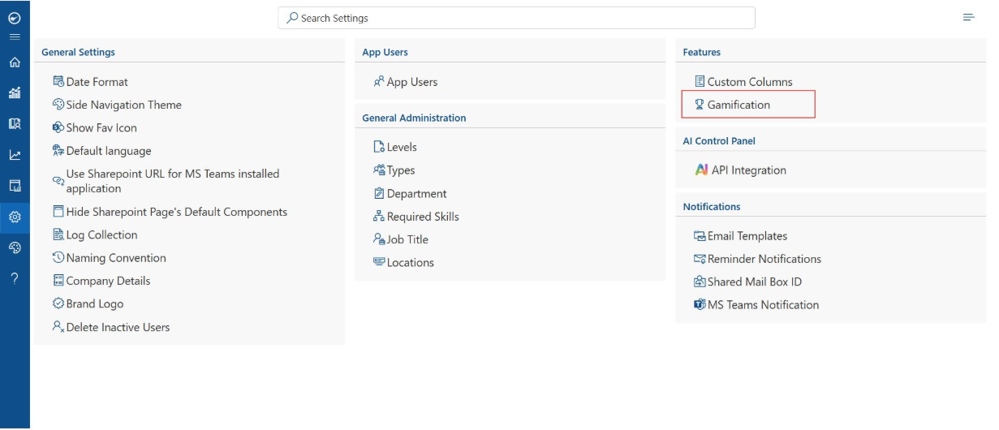
Figure 1 – LMS 365 Settings Panel with Gamification highlighted
Steps to Enable Gamification:
- Click the Settings icon (⚙) from the left-side navigation bar.
- The Settings page opens showing multiple sections including General Settings, Features, and Notifications.
- Under the Features section (right column), click Gamification.
- The Gamification panel opens — enable the toggle to activate the feature.
- Once enabled, three sub-sections become available: Reward Points, Badges, and Prizes.
3. Reward Points
Reward Points are automatically awarded to learners when they complete specific learning activities. Admins can configure the point value for each activity by clicking the edit (✏) icon next to it.
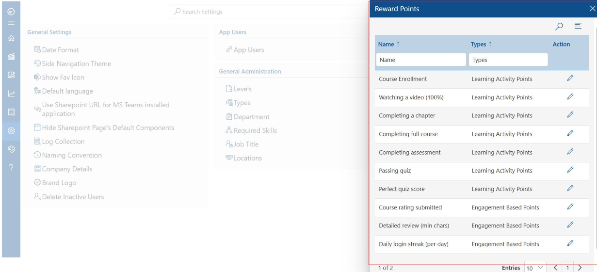
Figure 2 – Reward Points Configuration Panel
Reward Points are grouped into two categories:
3.1 Learning Activity Points
These points are awarded based on direct learning interactions within a course or assessment.
| Activity | Description |
|---|---|
| Course Enrollment | Points awarded when a learner enrolls in a course. |
| Watching a video (100%) | Points awarded when a learner watches a video to full completion (100%). |
| Completing a chapter | Points awarded for each chapter completed within a course. |
| Completing full course | Points awarded when a learner successfully completes an entire course. |
| Completing assessment | Points awarded when a learner submits a course assessment. |
| Passing quiz | Points awarded when a learner passes a quiz. |
| Perfect quiz score | Bonus points awarded for achieving a perfect score on any quiz. |
3.2 Engagement Based Points
These points are awarded based on learner engagement and participation beyond core course content.
| Activity | Description |
|---|---|
| Course rating submitted | Points awarded when a learner submits a rating for a completed course. |
| Detailed review (min chars) | Points awarded when a learner writes a detailed course review meeting the minimum character count. |
| Daily login streak (per day) | Points awarded for each consecutive day a learner logs in to LMS 365. |
4. Badges
Badges are digital achievement awards automatically earned by learners when they reach specific milestones. They are displayed on the learner's profile and the Gamification Dashboard to publicly celebrate accomplishments.
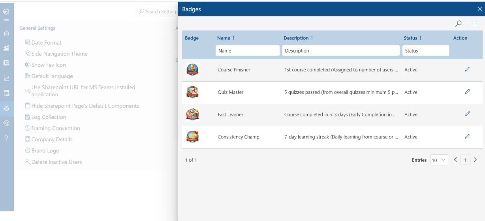
Figure 3 – Badges Configuration Panel
LMS 365 includes the following default badges:
| Name | Earning Criteria | Status |
|---|---|---|
| Course Finisher | 1st course completed — awarded when the learner finishes their very first course. | Active |
| Quiz Master | 5 quizzes passed — a minimum of 5 quizzes must be passed across all courses. | Active |
| Fast Learner | Course completed in less than 3 days — recognizes early course completion. | Active |
| Consistency Champ | 7-day learning streak — learner must engage in daily learning for 7 consecutive days. | Active |
5. Prizes
Prizes are redeemable rewards that learners can claim by spending their accumulated Reward Points. Admins build and manage the prize catalogue, setting the number of points required to redeem each prize.
5.1 Prizes List
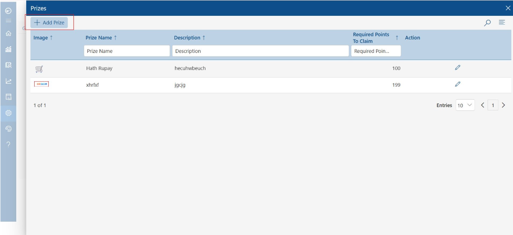
Figure 4 – Prizes List Panel
The Prizes panel displays all available prizes. Each row shows:
- Image — A thumbnail representing the prize.
- Prize Name — The title of the prize.
- Description — A short description of what the prize includes.
- Required Points To Claim — Total points the learner must spend to redeem the prize.
- Action — Edit existing prizes using the pencil (✏) icon.
5.2 Adding a New Prize
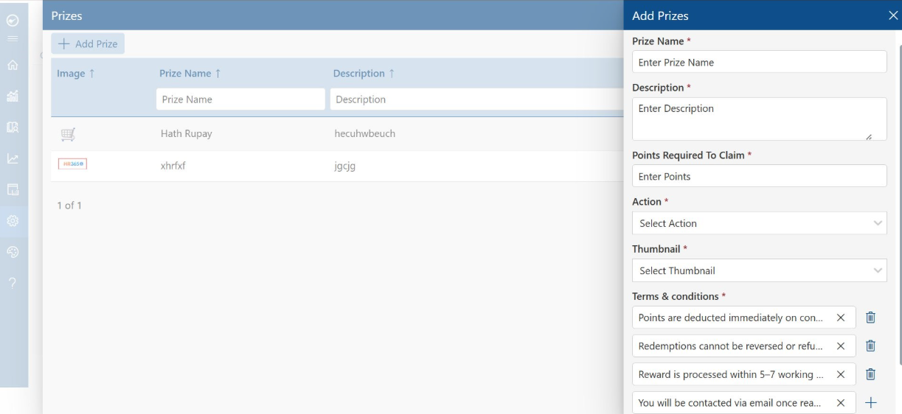
Figure 5 – Add Prize Form
To add a new prize to the catalogue:
- From the Prizes panel, click the + Add Prize button at the top-left.
- The Add Prizes form opens on the right side of the screen.
- Fill in all the required fields:
- Prize Name* — Enter the name of the prize (e.g., "Amazon Gift Card", "Extra Leave Day").
- Description* — Provide a brief explanation of the prize.
- Points Required To Claim* — Set the points a learner needs to redeem this prize.
- Action* — Choose what happens when the prize is claimed (e.g., notify admin for manual fulfilment).
- Thumbnail* — Select or upload a representative image for the prize.
- Terms & Conditions* — Review and customize the pre-filled terms. Add new lines with + or remove with the delete icon.
- Click Save to publish the prize to the learner-facing Rewards Store.
Default Terms & Conditions pre-filled in the form:
- Points are deducted immediately on confirmation.
- Redemptions cannot be reversed or refunded.
- Reward is processed within 5–7 working days.
- You will be contacted via email once ready.
6. Gamification Dashboard
The Gamification Dashboard gives a real-time visual overview of learner performance, leaderboard rankings, badge achievements, and point activity. It is accessible to Admins and learners from the left navigation bar.
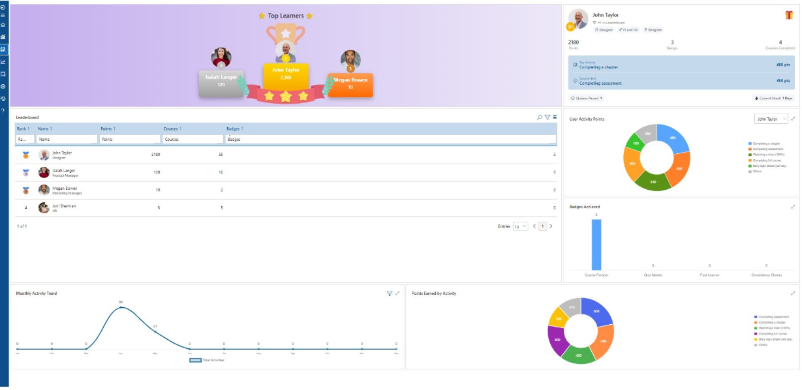
Figure 6 – Gamification Dashboard
6.1 Top Learners Banner
The top section displays the top 3 learners in a podium-style layout, showing
each learner's name, profile picture, and total accumulated points. The
#1 ranked learner is highlighted in the center.
6.2 Leaderboard
The leaderboard ranks all learners by total points and shows the following
columns:
- Rank — The learner's current position in the overall standings.
- Name & Designation — The learner's name and job title.
- Points — Total reward points accumulated.
- Courses — Number of courses completed.
- Badges — Number of badges earned.
6.3 Learner Profile Card
The right panel displays a summary card for the selected learner, showing:
- Total Points accumulated.
- Number of Badges earned.
- Number of Courses Completed.
- Top Activity — The activity that earned the most points.
- Second Best — The second highest point-earning activity.
- Quizzes Passed count and Current Login Streak (in days).
6.4 User Activity Points Chart
A donut chart showing the breakdown of how a learner's total points were earned
across different activity types: Completing a chapter, Completing assessment,
Watching a video (100%), Completing full course, Daily login streak, and Others.
6.5 Badges Achieved
A bar chart displaying how many of each badge type the learner has earned —
Course Finisher, Quiz Master, Fast Learner, and Consistency Champ.
6.6 Monthly Activity Trend
A line chart showing the total number of learning activities completed each
month across the year. Useful for identifying peak engagement months and periods
of low activity.
6.7 Points Earned by Activity
A donut chart showing the distribution of total points earned across all
activity types, helping admins understand which activities drive the most
learner engagement.
7. Quick Reference Summary
| Component | Purpose | Who Configures | Who Benefits |
|---|---|---|---|
| Reward Points | Points awarded for completing learning activities | Admin | All Learners |
| Badges | Achievement milestones unlocked automatically | Admin (view/edit) | All Learners |
| Prizes | Redeemable rewards using earned points | Admin | All Learners |
| Leaderboard | Ranks learners by total accumulated points | Auto-generated | All Users |
| Activity Points Chart | Breakdown of points by activity type | Auto-generated | Learners & Admins |
| Monthly Activity Trend | Learning activity volume tracked over time | Auto-generated | Admins |
| Badges Achieved Chart | Visual count of badges earned per type | Auto-generated | Learners & Admins |
LMS 365 – Course Workflow
Setting Up and Using the Course Approval Workflow
Overview
The Course Workflow feature in LMS 365 allows administrators to configure an approval process for courses. Once a workflow is set up, courses linked to it must be approved by the designated approver(s) before they become available for users to complete. This document walks through the end-to-end process: locating the Course Workflow setting, creating a new workflow, assigning approvers, and approving a course request.
Workflow Steps
Step 1: Navigate to Settings and Select Course Workflow
From the left-hand navigation, click the Settings (gear) icon. Under the Features section, locate and select Course Workflow to open the workflow management screen.
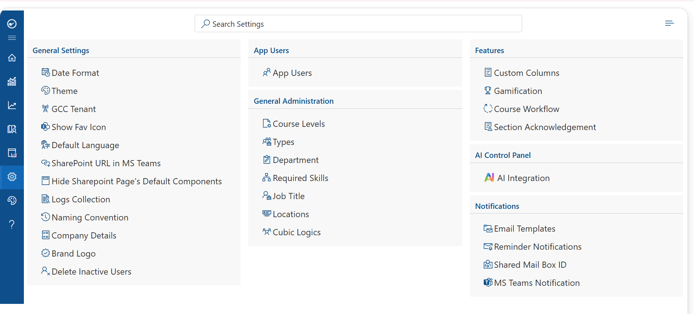
Step 2: Open the Approval Workflow Screen and Click Add
The Approval Workflow screen lists all existing workflows along with their associated courses, creation date, creator, and status. To create a new workflow, click the Add button in the top-left corner.
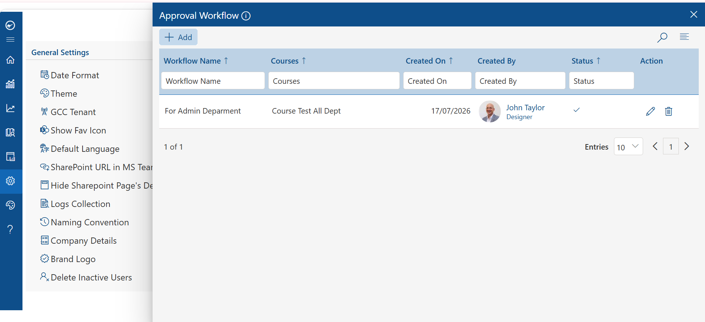
Step 3: Add the Mandatory Fields
In the Add Workflow panel, fill in the required fields: Workflow Name and Description. Select the courses this workflow will apply to from the Available Courses dropdown, and toggle Active to enable the workflow. On the right, the flow diagram shows the approval level (L1) — click the ellipsis (…) next to it to add approvers, or use Add Next Course Level to add further approval levels before the workflow reaches Complete.
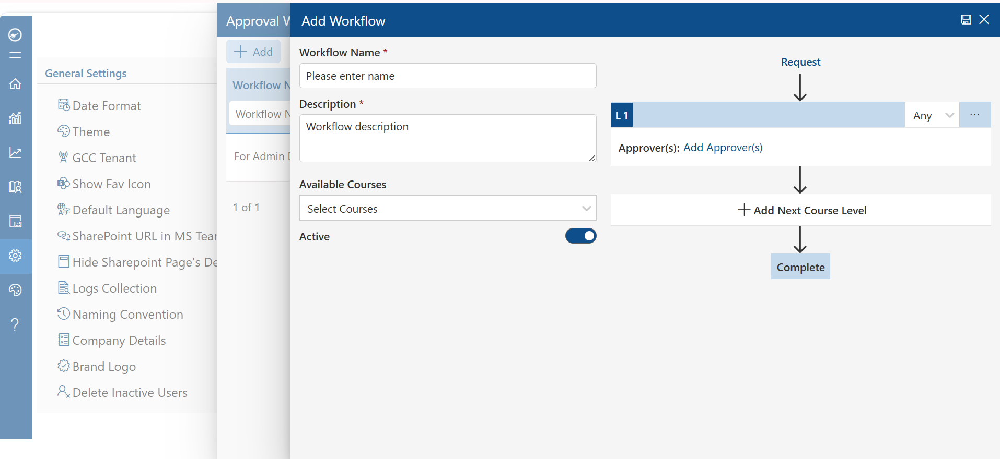
Step 4: Add Task Name and Approvers, then Save the Workflow
In the New Workflow panel, enter a Task Name and set the number of days within which the task must be approved (Approve within). Select the approver(s) by choosing one or more of the following options, then save the workflow:
- Employee's Manager
- Employee's Manager's Manager
- Department
- Job Title
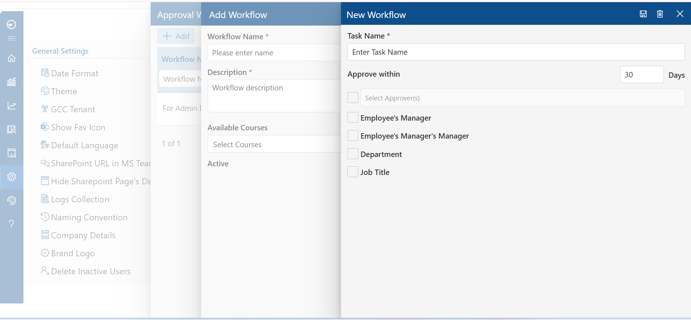
Step 5: Approve the Course Request
Once a workflow is linked to a course, any request for that course appears under the Course Approval tab for the designated approver, and under My Requests for the requester with a Pending status. The approver reviews the request under Pending Approvals and approves it. Once approved, the course becomes available for the user to complete.
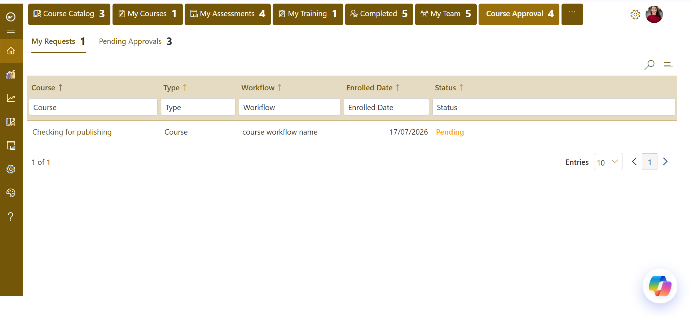
Note: A course will remain unavailable to end users until it has passed all configured approval levels in its linked workflow.
How to Add Section Acknowledgement
Steps to Add Section Acknowledgement
Step 1: Click Section Acknowledgement. In Settings, under Features, click Section Acknowledgement to open its configuration panel.
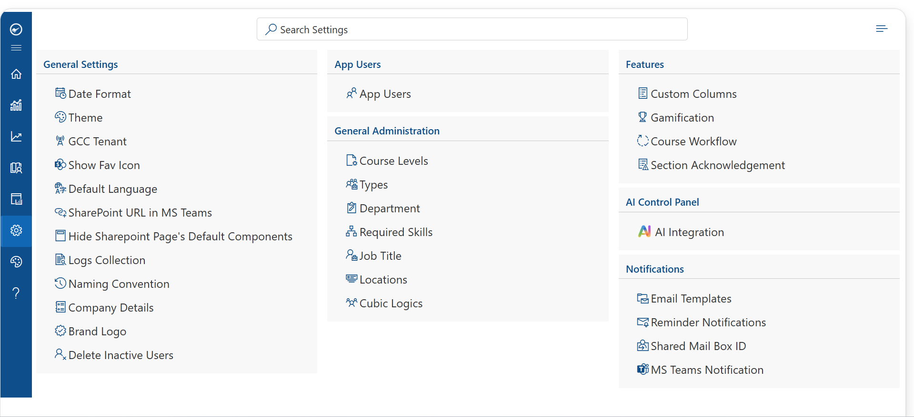
Step 2: Click Add. In the Section Acknowledgement panel, click the + Add button to create a new acknowledgement entry.
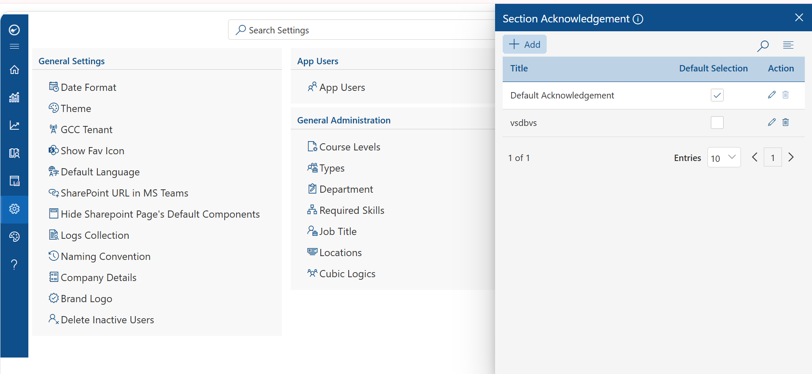
Step 3: Add the details. Enter a Title and add the required Checkbox Data conditions (mark them Mandatory as needed), then click Save.
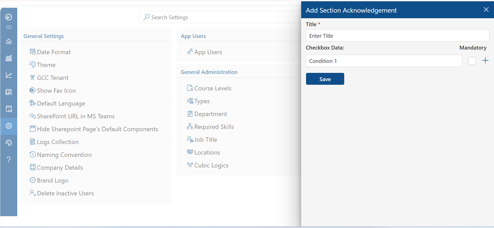
Step 4: View it on the course. Once saved, the acknowledgement is displayed to users when they complete the corresponding section in the course.
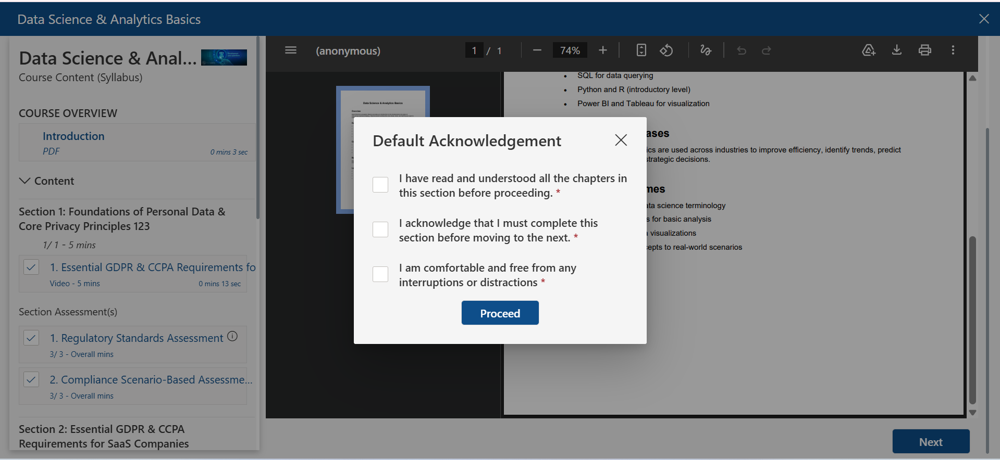